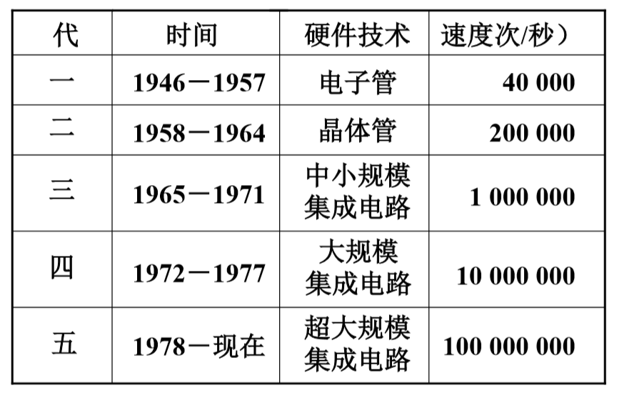
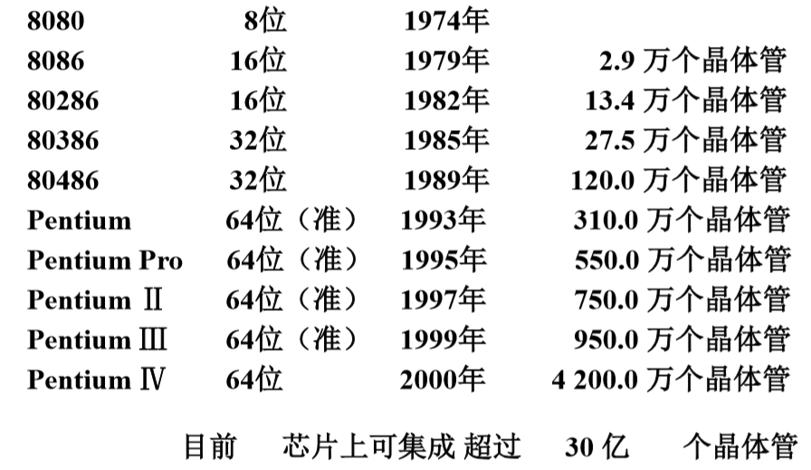

计算机性能与发展 链接到标题
计算机硬件性能指标 链接到标题
-
机器字长，CPU 一次能处理数据的位数与 CPU 中寄存器位数有关。
-
运算速度
- 主频
- 核数，每个核支持的线程数
- 吉普森法
- CPI 执行一条指令所需时钟周期数
- MIPS 每秒执行百万条指令
- FLOPS 每秒浮点运算次数
-
存储容量
- 主存容量
- 存储单元个数 X 存储字长，如 MAR 与 MDR 容量，1Kx8 位.
- 字节数，如 2^13b = 1KB.
- 辅存容量
- 字节数 80GB.
- 主存容量
计算机发展及应用 链接到标题
1946 年，美国 ENIAC 生产了世界第一台 10 进制运算的计算机，一共 18000 多个电子管，1500 多个继电器 ，150 千瓦的功耗，30 吨重量，占地 1500 平方英尺，每秒钟可以进行 5000 次加法运算，需要手工搬动开关和拔插电缆来进行编程。
硬件技术对计算机更新换代的影响 链接到标题

INtel 公司的典型微处理器产品 链接到标题

Moore 定律 链接到标题
Intel 公司的缔造者之一 Gordon Moore 提出，微芯片上集成的晶体管数目每三年翻两番。
编程语言的兴起 链接到标题
- 机器语言-面向机器
- 汇编语言-面向机器
- 高级语言-面向问题
- FORTRAN 科学计算和工程计算
- PASCAL 结构化程序设计
- C++ 面向对象
- Java 适应网络环境
系统软件 链接到标题
- 语言处理程序: 汇编程序，编译程序，解释程序
- 操作系统: DOS，UNIX，Windows，Linux，KylinLinux
- 服务性程序: 装备 调试 诊断 排错
- 数据库管理系统: 数据库和数据库管理软件
- 网络软件
软件发展的特点 链接到标题
- 开发周期长
- 制作成本昂贵
- 检测软件产品质量的特殊性
- 软件是程序以及开发和使用维护程序所需要的所有文档